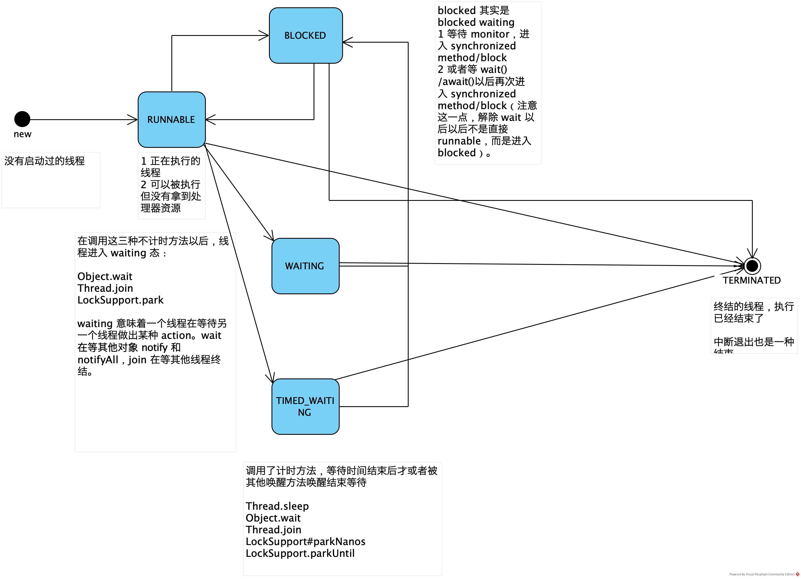

Java 线程状态

NEW
没有启动过的线程。
RUNNABLE
1 正在执行的线程。
2 可以被执行但没有拿到处理器资源。
BLOCKED
blocked 其实是 blocked waiting
1 等待 monitor，进入 synchronized method/block
2 或者等 wait()/await()以后再次进入 synchronized method/block（注意这一点，解除 wait 以后以后不是直接 runnable，而是进入 blocked，但这一步非常短暂，几乎不可能用程序观察到）。
WAITING
在调用这三种不计时方法以后，线程进入 waiting 态：
- Object.wait
- Thread.join
- LockSupport.park
waiting 意味着一个线程在等待另一个线程做出某种 action。wait 在等其他对象 notify 和 notifyAll，join 在等其他线程终结。
如：java.util.concurrent.LinkedBlockingQueue.take -> java.util.concurrent.locks.AbstractQueuedSynchronizer$ConditionObject.await -> java.util.concurrent.locks.LockSupport.park
reentrantlock 的 lock 接口的栈帧则是：
1 | sun.misc.Unsafe.park 行: 不可用 [本地方法] |
jstack 总会告诉我们 waiting 的位置，比如等待某个 Condition 的 await 操作。
1 | public static void main(String[] args) throws InterruptedException { |
对这个程序进行 thread dump，可以看出 ReentrantLock 就是依赖于 park 导致的 waiting：


如果使用 synchronized，则会显示 object monitor：
所以 waiting 可能是在条件变量上等待，也可能是在 synchronizer 本身上 上等待，不可一概而论。
按照 jvisualvm 的分类方法，线程还可以分为：
等待
驻留（park）
监视（monitor）
TIMED_WAITING
调用了计时方法，等待时间结束后才或者被其他唤醒方法唤醒结束等待。
Thread.sleep
Object.wait
Thread.join
LockSupport#parkNanos
LockSupport.parkUntil
如：
java.util.concurrent.ScheduledThreadPoolExecutor$DelayedWorkQueue.take -> java.util.concurrent.locks.AbstractQueuedSynchronizer$ConditionObject.awaitNanos -> java.util.concurrent.locks.LockSupport.parkNanos -> sun.misc.Unsafe.park
除了 sleep 以外，jstack 总会告诉我们 time_waiting 的位置，比如等待某个 Condition 的 await 操作。
TERMINATED
终结的线程，执行已经结束了。
中断退出也是一种结束。
几种线程状态的对比
- blocked：线程想要获取锁进入临界区之前，会求锁，求不到锁会进入 wait_set，然后放弃 cpu。高并发时 blocked 会增多。
- 工作线程池开始伸缩，扩容的时候：jvm.thread.waiting.count 的数量会变少，这意味着等待从 blockingQueue 里面 take 任务而阻塞的工作线程在变少。
- 工作吞吐变多，而调用下游的工作线程在阻塞的时候，jvm.thread.time_waiting.count 会变多，因为 rpc 框架自带超时，而这些超时是会让工作线程进行计时等待的。
- 流量变大的时候，2 和 3 可能同时发生。
特别的切换方法
LockSupport.park
condition 的 await 底层调用的是 LockSupport.park。
wait
从 wait 中醒来会有伪唤醒的 case，所以醒来的时候一定要先检查唤醒条件是否已经得到满足。原理见《为什么条件锁会产生虚假唤醒现象（spurious wakeup）？》